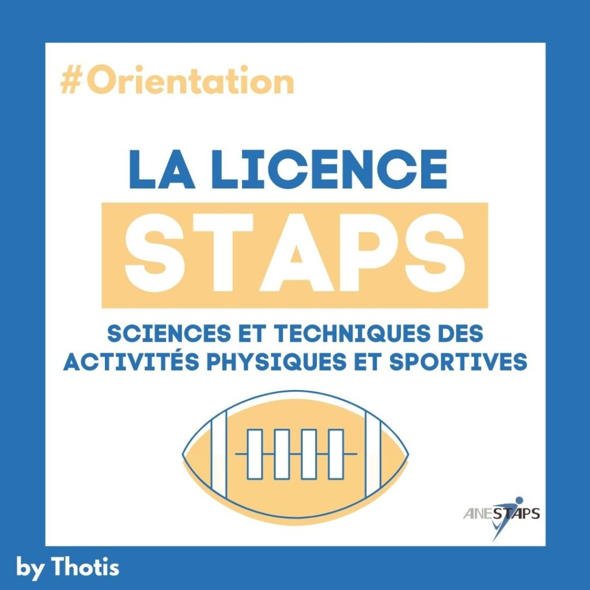

Depuis petit je veux travailler dans le monde du sport.
Je fais du foot depuis l'âge de 5 ans c'est un sport qui me passionne.
J'ai joué dans plusieurs clubs à différents poste comme par exemple milieu droit ou bien milieu offensif actuellement je joue n°10.
En spécialité l'année prochaine j'aimerais:
Puis jhésite pour la dernière entre :
Math est une matière que j'apprécie fort et où jusqu'à maintenant je me debrouille bien et j'aime le domaine des chiffres.
La SES (science économique et social) est une matière importante est très demandé pour un cursus dans la finance c'est une matière que j'affectionne.
La SVT est l'une des matières obligatoire pour le sport connaître l'anatomie humaine les risques et santé la SVT est nécessaire pour passer en staps ou fac de sport.
Je souhaiterai faire STAPS sport en ou bien un bac +5 spé finance ou management. Il y a plusieurs école comme Bordeaux Toulouse ou bien Poitiers, le taux de demande est très élève par rapport au nombre de reçu
